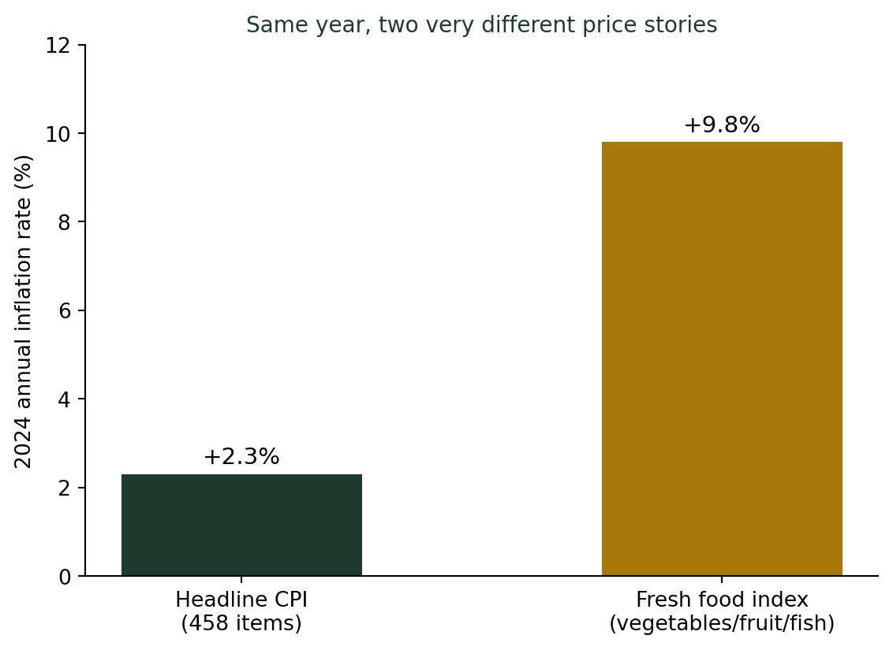
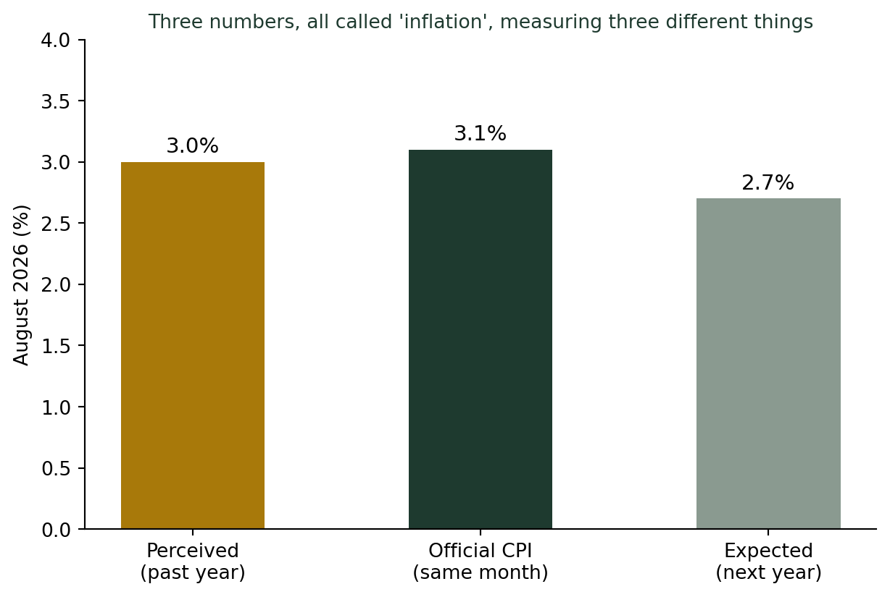

(공식 통계 숫자 읽는 법) 나만의 장바구니 물가지수 — 체감 물가와 통계 물가
통계기초
기술통계
2024년 한 해 전체 소비자물가는 2.3% 올랐다. 그런데 같은 해 신선식품 물가는 9.8% 뛰어 2010년 이후 최고치를 기록했다. 배추 한 포기 값은 1년 만에 40~60% 올랐다. 458개 품목을 하나로 섞은 ’평균 물가’와, 내가 실제로 장을 보며 느끼는 ’체감 물가’가 왜 이렇게 다른지 살펴본다.
물가는 2.3% 올랐다는데, 배춧값은 왜 이렇게 뛰었을까
2024년 한 해, 국가데이터처가 발표한 전체 소비자물가지수(CPI) 상승률은 2.3%였다. 그런데 같은 해 채소·과일·생선을 모은 신선식품지수는 9.8%나 올라, 2010년(21.3%) 이후 14년 만에 가장 큰 폭으로 뛰었다. 실제 장바구니 물가로 내려가 보면 체감은 더 극적이다. 2024년 10월 배추 한 포기 평균 소매가는 9,123원으로 1년 전보다 39.8%, 11월에는 7,050원으로 61.1% 올랐다. 4인 가족 김장 비용은 41만 9,130원으로 1년 전보다 19.6% 늘었다. “물가 2.3% 상승”이라는 뉴스를 보고 장을 보러 간 사람이라면, 이 숫자와 현실 사이의 거리에 당황했을 법하다.
물가지수는 458개 품목을 하나로 섞은 가중평균이다
소비자물가지수는 458개 대표품목의 가격 변화를, 가구 소비지출에서 각 품목이 차지하는 비중(1,000분비로 표시되는 가중치)만큼 반영해 하나의 숫자로 합친 가중평균이다. 쌀도, 배추도, 월세도, 스마트폰 요금제도, 대중교통비도 모두 이 하나의 숫자 안에 섞여 있다. 가중치는 5년마다 개편되는데(2025년 기준 개편분은 2026년 12월 발표 예정), “평균적인 가구”의 소비 패턴을 기준으로 삼는다. 문제는 나와 내 이웃의 장바구니가 이 “평균 가구”와 다를 수 있다는 데 있다. 신선식품 비중이 큰 1인 가구, 자가용 기름값 비중이 큰 가구, 사교육비 비중이 큰 가구는 저마다 다른 물가를 체감한다.
“장바구니 물가”에 가장 가까운 공식 지수
국가데이터처는 CPI 외에도 자주 구입하는 생필품 144개만 따로 묶은 생활물가지수를 함께 발표한다. 2026년 8월 기준 CPI는 전년동월비 3.1% 올랐는데, 생활물가지수는 3.2% 올랐다. 6월에는 그 격차가 더 벌어져 CPI 3.2%, 생활물가지수 3.4%였다. 격차는 크지 않아 보여도, 방향은 일관되게 생활물가 쪽이 더 높다 — 실제 구입 빈도가 높은 품목일수록 가격이 더 가파르게 오르는 경향이 있다는 뜻이다.

한국은행이 매달 조사하는 소비자동향조사를 보면, 2026년 8월 기준 가계가 지난 1년간 체감한 물가상승률(물가인식)은 3.0%, 앞으로 1년간 예상하는 물가상승률(기대인플레이션율)은 2.7%였다. 같은 달 공식 CPI 상승률은 3.1%다. 셋 다 뉴스에서는 그냥 “물가”라고 뭉뚱그려 불리지만, 하나는 과거에 대한 주관적 인상이고, 하나는 미래에 대한 전망이며, 하나는 458개 품목의 객관적 가중평균이다.
물가 통계를 읽는 법
- “물가가 X% 올랐다”는 뉴스를 보면, 그게 CPI인지 생활물가지수인지 신선식품지수인지부터 확인하라. 같은 달에도 세 숫자는 다르게 나온다.
- 내 소비 구성이 “평균 가구”와 얼마나 다른지 생각해보라. 장을 자주 보는 가구는 CPI보다 체감 물가가 늘 더 높게 느껴질 수 있다.
- “체감”과 “통계”가 다르다고 해서 어느 한쪽이 틀린 게 아니다. 둘은 애초에 다른 질문(내 지갑 vs 평균 가구의 지갑)에 답하고 있다.
더 깊이: 물가지수는 가중평균의 대표적인 활용 사례다
강의노트 〈기초통계학 3. 데이터와 요약통계 — 측정형 데이터〉는 가중평균 \(\overline{x}_w = \sum w_i x_i / \sum w_i\)의 실제 활용 사례로 성적 계산, 소비자물가지수 계산, 표본 비율 보정을 나란히 든다. 소비자물가지수는 이 공식을 그대로 따른다 — \(x_i\)는 품목별 가격 변화율, \(w_i\)는 가계소비지출에서 그 품목이 차지하는 비중이다. 가중치가 “평균 가구” 기준으로 고정되어 있는 한, 그 평균과 거리가 먼 소비 패턴을 가진 사람일수록 공식 물가와 체감 물가의 괴리를 더 크게 느낄 수밖에 없다.
SDV 관점: 평균 물가지수를 “나의” 물가지수로 바꾸기
CPI 458개 품목과 가중치를 계산해 하나의 숫자로 발표하는 일은 요약(기술통계, 1단계)이고, 그 숫자와 생활물가지수·신선식품지수를 비교해 괴리를 짚어내는 오늘의 작업은 추론(2단계)에 가깝다. 제가 제안하는 SDV(통계적 데이터 가치화)의 관점에서 한 걸음 더 나아가면, 진짜 가치 있는 작업은 “평균 가구의 물가지수”가 아니라 “이 가구의 물가지수”를 설계하는 일이다. 카드사·가계부 앱이 이미 개인별 지출 내역에 국가데이터처의 품목별 가격 변화율을 곱해 “나의 체감 물가”를 계산해주는 서비스를 선보이는 이유가 여기에 있다. AI는 이 계산을 순식간에 해낸다. 통계학자의 역할은 계산이 아니라, 이 개인화된 물가지수가 실제로 어떤 결정(생활비 예산, 소비 습관 조정, 정책 대상 선정)에 가치 있게 쓰이도록 설계하는 것이다. (SDV(데이터 가치화)에 이 5단계 프레임워크를 정리해두었다.)
결론: 평균은 내 이야기가 아닐 수 있다
나는 학생들에게 물가 통계를 가르칠 때 장바구니 영수증을 직접 가져오게 한다. 그 영수증의 품목 구성과 458개 대표품목의 가중치를 비교해보면, 자신이 왜 뉴스 속 물가상승률보다 더 힘들게(혹은 덜 힘들게) 느끼는지 금방 이해한다. 공식 물가 통계는 틀리지 않았다. 다만 그것은 “평균적인 우리”의 이야기이지, “나”의 이야기가 아닐 뿐이다.